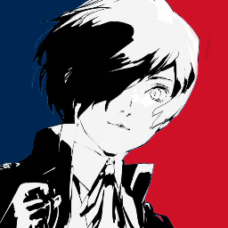

Two servers, one Persona family.

🇫🇷 French server Le Grimoire du Cœur Our French-speaking partner community — the most active. Events, discussions and the whole Persona FR scene. Join 🌍 International PersonaDLE The official PersonaDLE server — always active, English-friendly. Bug reports, feedback, and we're recruiting! Join
 ×
×

New challenges every day at midnight (Paris time)
Each of the 6 modes resets with a brand-new target. Streaks, stats & progress carry over!
Next reset in